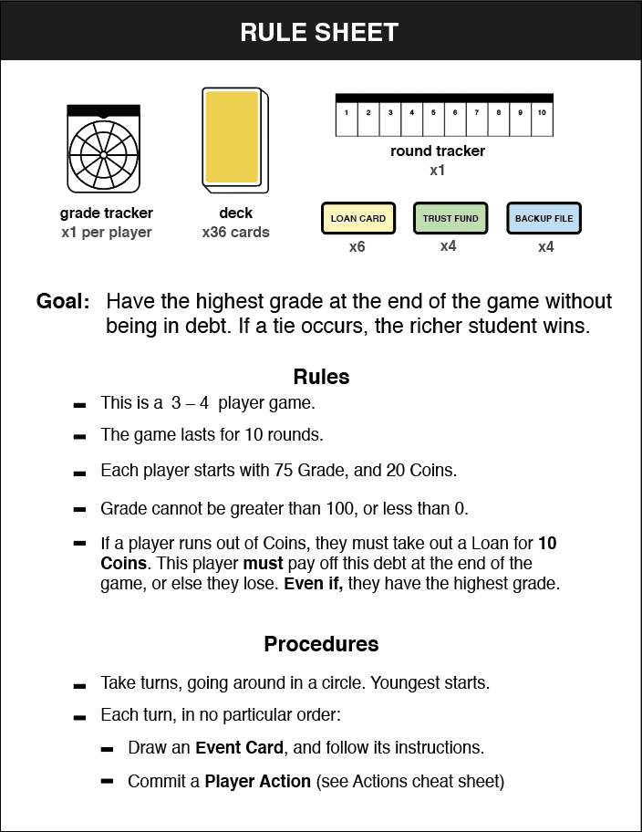
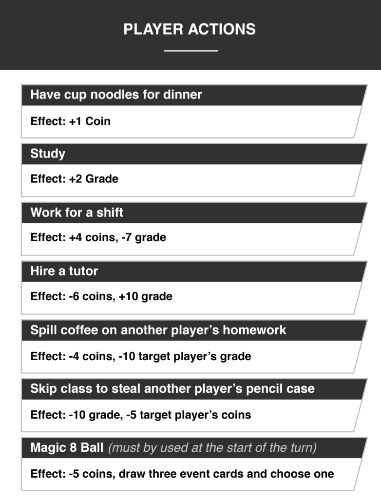
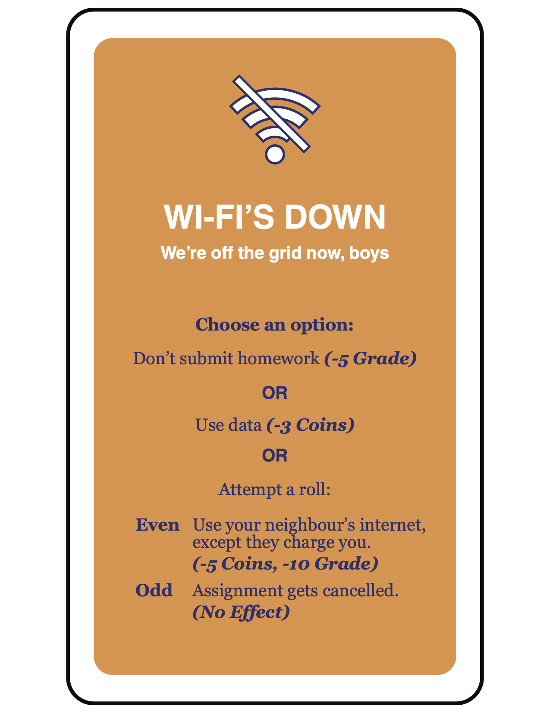

Schooled! was a final project I completed in my Fundamentals of Game Design class. The objective of the assignment was to create a game that applied to game design concepts that we learned, like game aesthetics, mechanics and dynamics, while creating a final product that was fun. Schooled! was designed around the fellowship and challenge game design aesthetics and built to be a people fun and serious fun game.
This game represented lifestyle and struggles that occur from being a post-secondary student. Our target audience were high school students, so we felt that this was an opportunity to offer future university students some insight into the academic lifestyle.

Process + Challenges
At its most basic form, Schooled! is an economic/resource management game. This means that our game required a lot of playtesting and iteration in order to tweak our values and achieve balanced gameplay.
For balancing, we started at our smallest scope and scaled up from there. First, we tackled the values of our cards and player abilities. Player abilities allow players to increase grades or funds, or lower one in exchange for improvement of the other. Event cards offer the same opportunities while sometimes causing players to only lose grades or funds, offering long-term improvements, or chance-driven events which can either be detrimental or favourable.

While tweaking these values, I wanted to create a balanced feel between positive and negative effects so that players wouldn’t feel that there was a dominant strategy in our gameplay loop.
Once we had our desired value-balance, we had to consider the makeup of the event card deck. For this, we considered the serious fun aspect of our game. We wanted to teach students about the challenges of post-secondary life. So I offered the idea of skewing our event card deck to be more negative than positive to challenge players.
At first, the makeup of our deck was far too negative and made the game almost impossible to win and as a result, not fun. But following some more tweaking, we found that challenging balance that made it still fun to play.

Final Product
As one of the top games in the class, the end-result of this project was quite positive. Not only did I become familiar with game design concepts that I use to this day, but I got to figure out what makes games fun and how to create a product that people want to play.
Had this project continued, I would have liked to increase the kinds of event cards in the deck. During the class, once we achieved our balance, we decided against increasing the variety of event cards as it would have thrown off our balance and required further testing and iteration that we did not have time for.